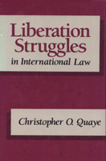

<body bgcolor="#FFFFFF" text="#000000" link="#0000FF" vlink="#CC0000" alink="#CC0000"><center><hr width="350" size="1" align="center" noshade>An investigation of self-determination, secession, rebellion, the use of force, and terrorism in national liberation movements<hr width="350" size="1" align="center" noshade><p><a href="https://cdcshoppingcart.uchicago.edu/Cart/ChicagoBook.aspx?ISBN=9780877227120&&PRESS=temple" target="_top">Buy this book!</a> | <a href="https://cdcshoppingcart.uchicago.edu/Cart/Cart.aspx?PRESS=temple" target="_top">View Cart</a> | <a href="https://cdcshoppingcart.uchicago.edu/Cart/Cart.aspx?PRESS=temple" target="_top">Check Out</a></p><p></p></center><!--none//--><h1>Liberation Struggles in International Law</h1>
<h3>Christopher O. Quaye</h3>
<P>cloth 0-87722-712-8 $90.50, Oct 90, <FONT COLOR=#990033>Available</FONT>
<BR> 358 pp
</P><BLOCKQUOTE><I>"This study constitutes an important addition to the literature of international law and political science. It represents a fresh approach to a complex subject, and its conclusions are based not only on a careful study of a large number of cases and situations, but also a painstaking analysis of the vast literature on various aspects of the problem."</I>
<br>&#151<b>Louis B. Sohn</b>, University of Georgia (Emeritus)<I></I></BLOCKQUOTE>
<p>Prodigiously researched, this book presents a thorough study of one of the most fascinating international phenomena&#151the national liberation movements. Christopher O. Quaye investigates various aspects of these movements, including their relationship to self-determination, secession, rebellion, the use of force, and terrorism. He skillfully combines the separate disciplines of jurisprudence, international politics, and international law to examine the significance of the role played by international law and the United Nations in legitimizing certain categories of liberation struggles.
<p>Unlike many other books written on this subject, <I>Liberation Struggles in International Law</I> does not limit itself to anti-colonial cases, but also devotes considerable attention to non-colonial liberation movements, and to self-determination in a broad sense&#151the struggle against oppressive governments.
<BR>&nbsp;<H2>About the Author(s)</H2>
<P><b>Christopher O. Quaye</b>, a legal scholar from Ghana, recently completed his dissertation at Harvard Law School.</P>
<BR><H2>Subject Categories</H2>
<p><A HREF="/tempress/law.html" TARGET="_top">Law and Criminology</a>
</p>
<p align="center"><a href="https://cdcshoppingcart.uchicago.edu/Cart/ChicagoBook.aspx?ISBN=9780877227120&&PRESS=temple" target="_top">Buy this book!</a> | <a href="https://cdcshoppingcart.uchicago.edu/Cart/Cart.aspx?PRESS=temple" target="_top">View Cart</a> | <a href="https://cdcshoppingcart.uchicago.edu/Cart/Cart.aspx?PRESS=temple" target="_top">Check Out</a></p><p><font face="Arial" size="1"><a href="copyright.html" onMouseOver="window.status='Web Copyright Policy';return true;" onMouseOut="window.status=''" title="Web Copyright Policy">&copy;</a> 2015 <a href="http://www.temple.edu" target="new" onMouseOver="window.status='Link to Temple University home page';return true;" onMouseOut="window.status=''" title="Link to Temple University home page">Temple University</a>. All Rights Reserved. http://www.temple.edu/tempress/titles/678_reg.html</font></p>